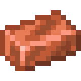

| Title | Type | Set | Durability | |
|---|---|---|---|---|
| Wood | Block | Minecraft | 50 | |
 |
Stone | Block | Minecraft | 100 |
 |
Diamond | Ore | Minecraft | 1567 |
| Obsidian | Block | Minecraft | - | |
|  | Cooper ingot | Ore | Base metals | 150 |
| Tin | Catalyst | Base metals | - |
создания инструментов и брони, а также для
создания схем из красного камня и торговли.
Ресурсы можно найти везде, начиная от стартовой
локации, близлежащих деревень, шахт и пещер
и закончивая другими измерениями, такими как:
Нижний мир и измерение Энда
В мире Minecraft бывают разные ресурсы( каменные,
декоративные, руды, пища и т.д.),
значит и бывают разные способы добычи этих ресурсов.
Различные древесные блоки добываются топором,
все руды и другие камни, которые
можно найти в пещерах и шахтах,
добываются киркой. А вот посадить семяна и
вырастить новый урожай, поможет мотыга.
Кроме того, ресурсы можно использовать для
создания строительных минеральных блоков.
Количество добываемого материала может быть
значительно увеличено с помощью чар «Удача».
Чтобы добыть сам блок руды, а не материал,
требуется кирка с чарами «Шёлковое касание».